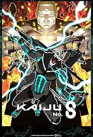

Season 1 (2024)
Kafka Hibino joins the Defense Force while hiding his new Kaiju-transformation power, fighting to protect his partner Mina and the rest of humanity.

Action, Shonen, Sci-Fi
32-year-old Kafka Hibino works as a cleanup crew member clearing monster remains. After a parasitic creature enters his body, he gains the ability to transform into a humanoid monster known as "Kaiju No. 8".
Kafka Hibino joins the Defense Force while hiding his new Kaiju-transformation power, fighting to protect his partner Mina and the rest of humanity.